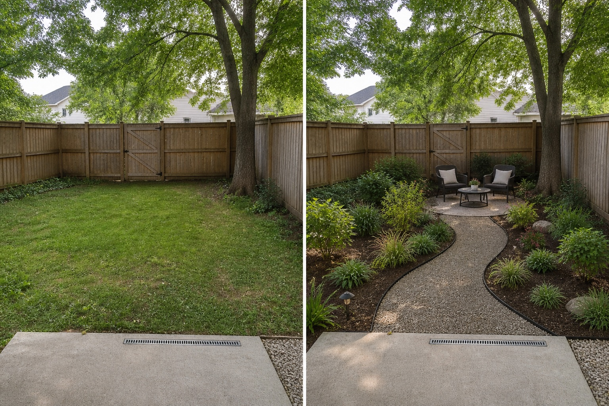

Capture constraints in frame
The useful photo includes the gate, drain, boundaries, tree, and threshold instead of cropping them away.
A level, wide backyard photo can help an AI visualizer preserve recognizable boundaries and compare layout ideas. The result is useful for discussing intent, but measurements, hidden conditions, plants, materials, cost, safety, and buildability remain unverified.
Editorially reviewed August 14, 2026.
This AI-generated comparison is visual inspiration, not a measured plan, specification, safety assessment, cost estimate, local approval, plant recommendation, or construction guarantee.

The useful photo includes the gate, drain, boundaries, tree, and threshold instead of cropping them away.
The concept tests route, seating, and edge hierarchy rather than asking for an undefined total makeover.
Fixed objects are checked side by side so invented geometry or removed constraints are easy to reject.
The comparison keeps the fence, gate, mature tree, lawn, patio edge, drain, and camera position. The concept adds only a visual route, movable seating, and planting direction; it is not evidence that any element fits or performs.
Use a level, wide view that includes boundaries, doors, gates, levels, drains, utilities, and established trees rather than cropping away constraints.
Name the route, activity, mood, or comparison you want to test. A style word alone gives the visualization too little useful direction.
Reject outputs that move structures, invent space, conceal access, alter levels, or remove site facts that were meant to remain.
Measure the site and check drainage, structure, products, plants, local rules, costs, and professional requirements independently before acting.
Avoid treating one attractive output as a plan, hiding constraints outside the frame, prompting for unsafe specificity, or assuming AI-identified plants and materials are correct. Stop before purchases or construction and verify every dimension, condition, product, species, rule, cost, and professional requirement independently.
Use a level, wide, well-lit image that shows boundaries, access, levels, drains, utilities, structures, and established trees.
Do not rely on it for measurements. Record dimensions and site information independently.
Use it to compare directions, clarify preferences, and communicate a brief before site-specific planning and verification.
Upload a level, wide photo to compare restrained concepts before making physical changes.
AI-generated visualizations are concepts. Verify measurements, conditions, drainage, access, structure, utilities, local rules, product information, plant suitability, and professional requirements before buying or building.